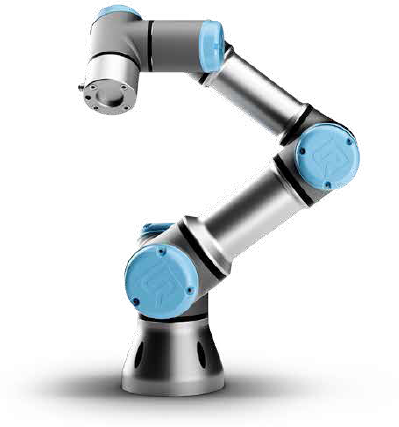

Tantárgy bemutató

A Robottechnika tantárgy célja, hogy a tanulók megismerjék az ipari robotok működésének alapjait és azok programozását. A robotokat egyre gyakrabban használják gyárakban és automatizált rendszerekben különböző feladatok elvégzésére, például tárgyak mozgatására, összeszerelésre vagy válogatásra.
A tantárgy során a diákok megismerkednek a robotkar felépítésével, a különböző tengelyek működésével, valamint azzal, hogyan lehet a robot mozgását programozással irányítani. Emellett megtanulják a robot biztonságos használatát és az alapvető vezérlési műveleteket.
A gyakorlatokon egy ipari robotkarral dolgoztunk, amellyel különböző feladatokat hajtottunk végre, például tárgyak felvételét és áthelyezését egyik helyről a másikra. A feladatok során a robot egy megfogó segítségével henger alakú elemeket mozgatott és helyezett el egy táblán kialakított pozíciókba. A tantárgy célja az volt, hogy a tanulók gyakorlati tapasztalatot szerezzenek a robotok működéséről és programozásáról az ipari automatizálás területén.